Jordi Isidro Llobet
A favor de l'equitat i igualtat social. D'esquerres, decreixentista, anticapitalista, ecologista, independentista i alguns istes més, no necessàriament en aquest ordre. Defensor de les cooperatives com a alternativa a uns serveix públics amb mancances, fora de control de la població i poc transparents.
La democracia consisteix en la població pugui prendre les seves propies decisions, per això és imprescindible tenir el control dels recursos i infrastructures bàsiques. No podem estar subjectes a les decisions de les grans corporacions. Hem de tenir a l'abast totes les dades de com es gestionen els nostres recursos per poder prendre les decisions de forma adequada.
Els meus diners fan poítica cada dia.
Com diuen els Brams:
Quan marxem haurem reconvertit la merda en fems.
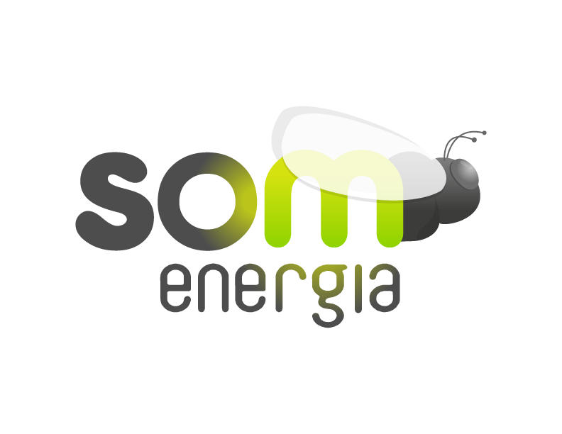 Som Energia
Cooperativa sense ànim de lucre que té com a objectiu canviar el sistema elèctric cap a un de més just, transparent, eficient, descentralitzat, democràtic i basat en les energies renovables.
Per aconseguir-ho comercialitza energia renovable, construeix pantes per produir energia renovable i fa formacions a les persones sòcies per que puguin ser més crítiques amb el mercat elèctric.
Participació
Membre impulsor del grup local del Baix Llobregat.
Com ha membre del grup he fet xerrades de difussió de la cooperativa, estands informatius i tallers formatius.
També he col·laborat en l'organització de les assemblees generals juntament amb el grup local de Barcelona.
Fiare Banca Ètica
Fiare Banca Etica neix de la unió de dos projectes basats en les finances ètiques: Banca Popolare Etica, un banc cooperatiu que treballa a Itàlia des del 1999 i Fiare que opera a Espanya des del 2005. Tots dos volen ser una eina al servei de la transformació social a través del finançament de projectes de l'economia social i solidària i la promoció d'una cultura de la intermediació financera, sota els principis de la transparència, la participació, la democràcia i el crèdit com a dret.
Sabem bé que tota decisió econòmica és una decisió ètica, assumida des d'un marc de conviccions i les conseqüències de les quals afavoreixen a uns i perjudiquen a uns altres. El nostre objectiu és recuperar el valor social dels diners. És per això que els dipòsits d'estalvi de les persones i organitzacions que compartim aquests principis, serveixen per finançar el desenvolupament cooperatiu, els valors transformadors, l'agroecologia, la cooperació al desenvolupament, el comerç just i la lluita contra l'exclusió social.
Participació
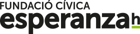 Fundació Cívica Esperanzah
La Fundació Cívica Esperanzah ées una organització sense ànim de lucre que neix amb la voluntat de potenciar i consolidar el sector de l’economia social, solidària i el desenvolupament sostenible. És un projecte del Prat de Llobregat per al Prat on els ciutadans i ciutadanes del nostre poble són els principals beneficiaris de les accions que portarem a terme. El Prat té el privilegi de comptar amb una xarxa associativa forta i compacta que treballa des de fa anys impulsant projectes, innovant i creant alternatives. La voluntat de la Fundació és ajudar a aquestes iniciatives i aquestes persones emprenedores a seguir creixen. Volem fer del Prat un referent de l’economia solidària i de la gestió ciutadana, enfortint el seu teixit associatiu i acompanyant els seus veïns i veïnes cap a un major empoderament que els permeti aconseguir la ciutadania plena.
Participació
A mitjans de 2017 se'm va proposar entrar a formar part del patronat de la fundació. Ho vaig acceptar sense dubtar-ho. Intento aportar la meva visió i experiència en la part economia social i solidària.
Més economia social i solidària
Per desgràcia el meu temps és limitat i no puc implicar-me en tots els projectes que m'agradaria. Tot i això vull llistar algunes de les entitats a les que hi astic associat o hi dono suport.
-
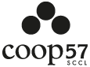 Coop57
www.coop57.coop Finances ètiques
-
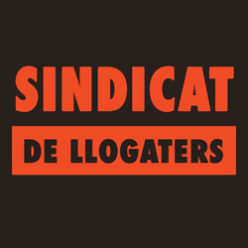 Sindicat de lloguateres
sindicatdellogateres.org En defensa d’un lloguer just.
Contra l'abús immobiliari, pel dret a l'habitatge i a viure a la ciutat -
 Som Connexió
somconnexio.coop Cooperativa sense ànim de lucre per un sistema just i llire de les telecomunicacions.
-
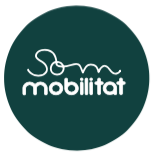 Som mobilitat
www.sommobilitat.coop Cooperativa sense ànim de lucre. Mobilitat sostenible. Minimitzar desplaçaments, i en cas que s'hagin de fer prioritzar anar caminant o en bicicleta, transport públic i, finalment, mobilitat compartida amb vehicles elèctrics.
-
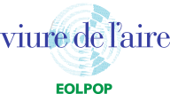 Viure de l'aire
viuredelaire.cat Aerogenerador de propietat compartida.
-
La Directa
directa.cat Cooperativa sense àmim de lucre.
Mitjà de comunicació cooperatiu en català d'actualitat, investigació, debat i anàlisi amb més de deu anys de trajectòria. -
La Jornada
www.diarijornada.coop Nou mitjà de comunicació generalista i independent dels grans poders.
On em gasto els meus diners?
Els diners cada dia fan política. Odio el consumisme i crec que hi ha organitzacions que saben utilitzar molt millor que jo els diners que no necessito.
-
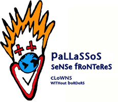 Pallassos sense fronteres
www.clowns.org/ca
ONG que el seu objectiu és actuar en zones de conflicte o exclusió, a fi de millorar la situació psicològica a les poblacions refugiades i zones de conflictes i guerra, així com sensibilitzar la societat sobre la situació de les poblacions afectades i promoure actituds solidàries.
-
Metges sense fronteres
www.msf.es
ONG que es dedica principalment a l'ajuda de poblacions en situació precària i a les víctimes de conflictes, fams i catàstrofes d'origen natural. Va ser fundada en la idea que tothom té dret a una assistència mèdica, independentment de la seva nacionalitat.
-
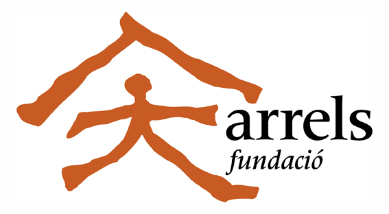 Fundació arrels
www.arrelsfundacio.org
ONG que s'encarrega de vetllar pels drets i oportunitats de les persones sense llar.
-
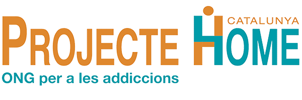 Projecte Home
www.projectehome.cat
ONG que s'encarrega del tractament i prevenció de les addiccions.
-
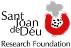 Fundació Sant Joan de Déu
www.fsjd.org/ca
Fundació que s'encarrega de projectes d'investigació mèdica.
-
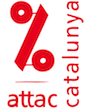 ATTAC Catalunya
attac-catalunya.cat
És un moviment internacional de ciutadans pel control democràtic dels mercats financers i les seves institucions.
-
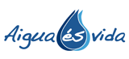 Aigua és vida
www.aiguaesvida.org
L’objectiu d’Aigua és Vida és aconseguir que la política d’aigua i la gestió del cicle integral de l’aigua a Catalunya sigui realitzada des del sector públic i comptin amb la participació i el control de la societat civil com a garantia de qualitat del servei i de qualitat democràtica.
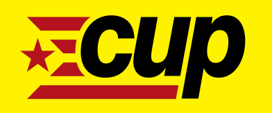 Candidatura d'Unitat Popular
Dins de les contradiccions en que et pots trobar en qualsevol partit polític, en la CUP he trobat el partit que més s'acosta a la meva forma de pensar: independentisme, anticapitalisme, feminisme, assemblearisme,...
Eestem en un moment en que toca posicionar-se i amb la CUP m'hi sento còmode.
També simpatitzo amb els Pirates i la seva visió de democràcia directa i llibertat de software.
Software lliure
Tot i que laboralment estic estic en el món del software privatiu crec que el software lliure és imprescindible per tenir una societat lliure.
Crec que és molt important mantenir amb vida alternatives al sofware privatiu.
Per que el software lliure pugui subsistir i seguir sent lliure és necessari donar-li suport, tant en la part de programació com econòmic.
Per manca de temps, i moltes vegades de coneixement, no puc donar suport en la part de programació, i per això dóno suport en la part econòmica.
-
 Projecte Gnome (gimp)
Projecte Gnome (gimp)
www.gimp.org/donating/
Editor gràfic.
-
 Inkscape
Inkscape
inkscape.org/en/support-us/donate/
Editor gràfic per a SVG.
-
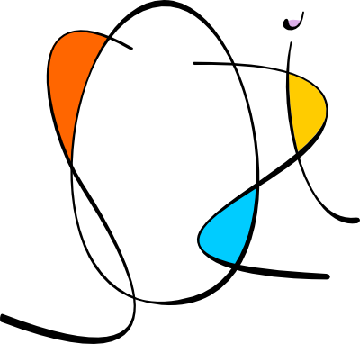 Sozi
sozi.baierouge.fr/pages/60-contribute.html
Presentacions molt xules (alternativa a Prezi).
-
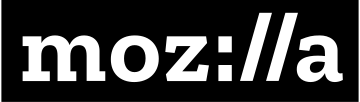 Mozilla foundation
donate.mozilla.org/en-US/
Navegador firefox, Thunderbird, Filezilla, etc.
-
Eclipse
www.eclipse.org/donate/
Entorn de programació.
-
 Calibre
Calibre
calibre-ebook.com/
Gestió de llibres electrònics.
-
 Wikimedia foundation
Wikimedia foundation
wikimediafoundation.org/wiki/Ways_to_Give
Coneixement obert (Wikipedia, Wikidata, etc.).